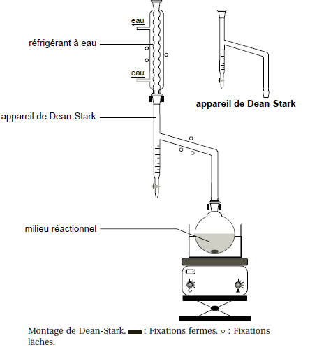
Montages de synthèse
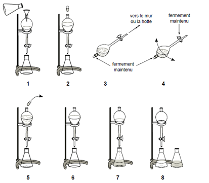
Décantation, extraction et lavage
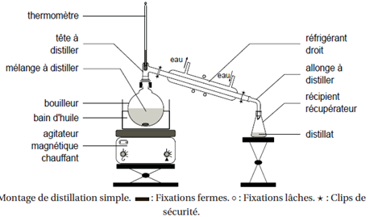
Distillation simple
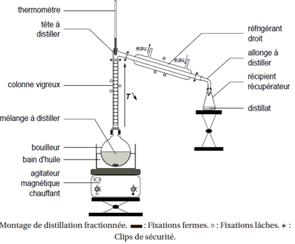
Distillation fractionnée
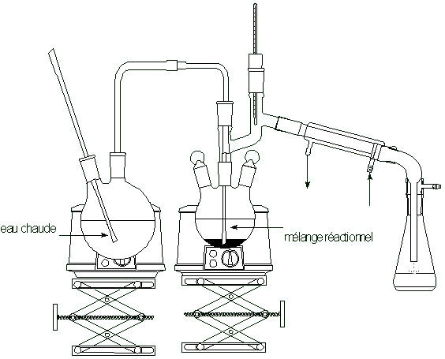
Entraînement à la vapeur
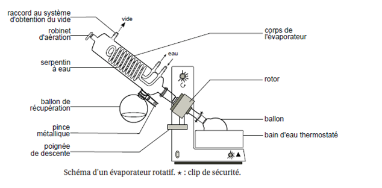
Évaporateur rotatif (rotavap)
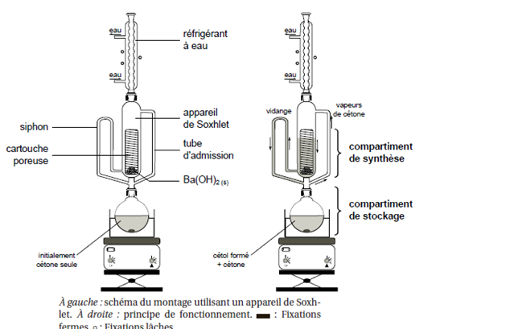
Extracteur de Soxhlet
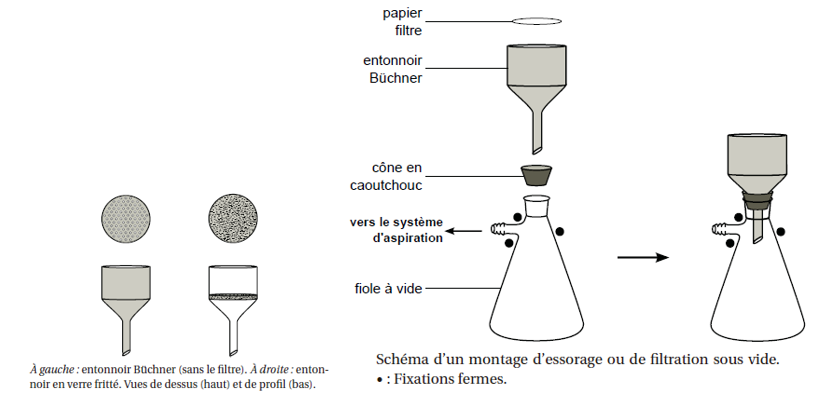
Filtration S/L
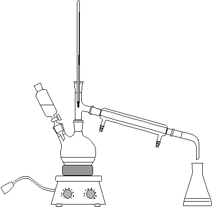
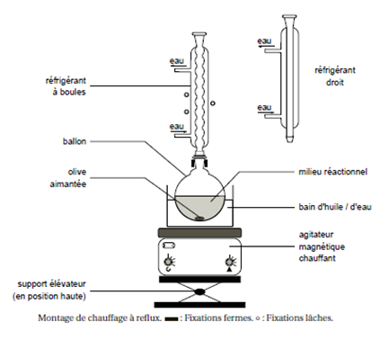
Montages à reflux
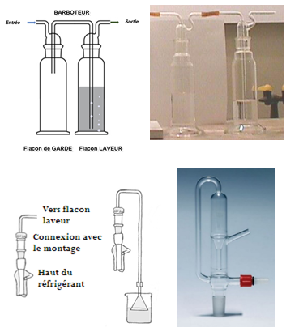
Pièges à gaz
Recristallisation
⚗️
Séchage d'une phase organique
Techniques d'analyse présentes au laboratoire
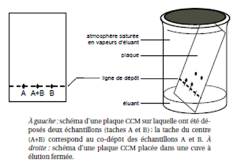
Chromatographie sur couche mince (CCM)
Chromatographie en phase gazeuse (CPG)
Chromatographie liquide haute performance (HPLC)
Point de fusion
⚗️